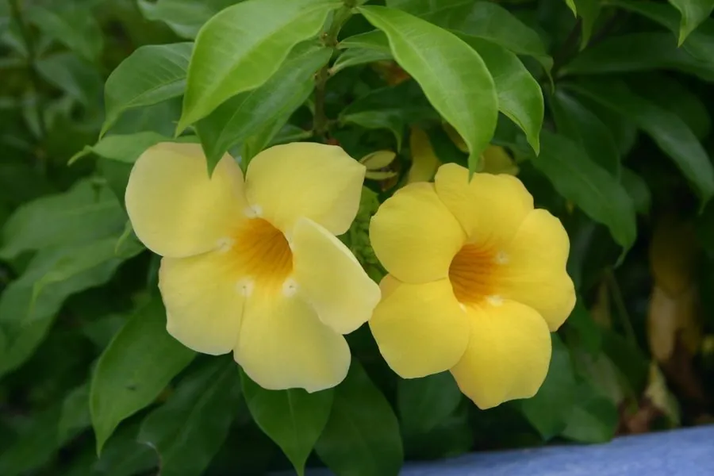

灌木与花木 · 植物界
软枝黄蝉 Allamanda cathartica

原产南美的常绿蔓性灌木，夏季开明黄色喇叭状大花，花期长、色彩明快，是南方庭院与棚架常见花木。
- 分类
- 门被子植物门纲木兰纲目龙胆目科夹竹桃科属黄蝉属
- 栖息环境
- 海拔 800 米以下的热带地区，喜高温多湿、光照充足
- 地理分布
- 原产巴西、秘鲁等热带美洲，中国华南地区广泛栽培
- 保护级别
- 暂无评估；中国未列入国家重点保护野生植物名录
物种志
软枝黄蝉为常绿蔓性灌木，茎柔软、长可达数米，常攀援或匍匐生长；叶片对生或轮生，长椭圆形至倒卵形，革质有光泽。花期 5–10 月，聚伞花序顶生，花冠漏斗状、明黄色，花径 8–12 cm，花瓣 5 裂、边缘波状；蒴果球形，具刺，成熟时开裂，但栽培条件下少见结实。
软枝黄蝉原产巴西、秘鲁等南美洲热带地区，中国广东、广西、福建、海南、云南等地栽培，喜高温多湿、光照充足，适宜疏松肥沃、排水良好的土壤，不耐寒。因花色明黄、花大而美、花期长，常被用于南方庭院、公园与棚架的立体绿化，也可盆栽观赏；全株含白色乳汁，有毒，误食会引起呕吐与腹泻，修剪时需注意防护。软枝黄蝉与黄蝉同属，前者枝条柔软蔓生、花大，后者植株较矮、花较小。
形态与习性
- 株高藤蔓可长达数米，茎柔软
- 花期5–10 月，花明黄色、径 8–12 cm
- 果期栽培条件下少见结实
- 光照喜光，不耐长期荫蔽
- 水分喜湿润，怕积水
- 土壤疏松肥沃、排水良好的壤土
- 主要用途庭院与棚架立体绿化、盆栽观赏
趣味知识
- 软枝黄蝉的花冠呈明黄色漏斗状、花径可达 12 cm，是夏季最亮眼的花木之一。
- 软枝黄蝉的枝条柔软蔓生，常攀附棚架生长，因此得名“软枝”。
- 软枝黄蝉全株有毒，误食会引起呕吐腹泻，修剪时需戴手套。
- 软枝黄蝉原产南美热带地区，中国华南地区广泛栽培。